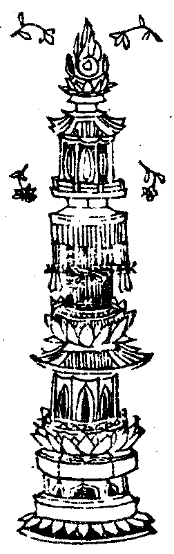

高麗國新雕大藏校正別錄卷第八 俊
蘇悉地羯囉經卷中之二
蓮花部真言曰。
唵庵沒[口*栗](二合)擔伽(輕)咩室哩(二合)曳室唎(二合)忙里寧(上)莎(去)訶(去)
二手頭指無名指捻右手掐念通一切用若阿毗遮嚕迦堅其母指捻數珠印菩提子珠佛部念誦蓮花子珠觀音部用嚕梛囉叉子金剛部珠三部遍用各如前說此等數珠最為勝上一切念誦應當執持或用木槵或多羅樹子或用土作或螺琁作珠或以水精或用真珠或牙作珠或用赤珠或諸摩尼等或用薏苡珠及餘草子各隨於部觀其色類應取念持若作阿毗遮嚕迦法應用諸骨而作數珠速得成就為護淨增益法驗故更應誦。
佛部真言曰。
唵囊(上)謨(上)薄伽(輕)嚩底(丁以反)悉悌娑(去)大也悉馱(引)囉替(二合)莎(去)訶
蓮花部增驗真言曰。
唵嚩蘇(上)莽底(丁以反)室哩(二合)曳莎(去)訶
金剛部增驗真言曰。
唵嚩日囒(二合)尒擔若曳莎(去)訶
用前珠印而念誦之念誦之時珠置當心不得高下捧數珠時以小仾頭結志誠心而禮三寶次禮八大菩薩次禮明王眷属次應起首持誦真言想真言主如對目前如是傾誠不應散亂心緣別境但諸真言初有唵字及囊(上)麼塞迦(去)[口*藍]等字者應靜心中念誦扇底迦時補瑟徵迦時皆應緩誦或心念誦或有真言後有[合*牛]字及有泮吒字者當知皆應厲聲念誦作阿毗遮嚕迦時及餘忿時用看真言字數有多少字有十五應誦十五落叉遍有三十三字應誦三落叉過此數者誦十千遍如上初誦之時滿如上數觀其部類或上中下或三種事或觀聖者說為天說謂地居天說細觀部類當誦持之乃至成就如是初誦若不先誦而遍念持所求下法尚不得久况求上中悉地成就以是義故作勝上心而先念誦但諸真言初誦持時如已先說誦持遍數分為十分然後念誦既滿祈請真言主悉地因緣初無相貌如是從頭第二第三祈請若有相貌即當依法念誦真言若無境界弃不應誦請祈法則與請召法同祈請之時於其夢中見真言主背面而去或不與語當應更須起首念誦如是再三若於夢中見真言主與語當知此人不久成就若無境界不應誦持若強念持與人為禍初持誦時於淨密處起首誦持從初日誦持乃至疲極遍數多少一須依定不應加減。
先說三時念誦者晝日初分後分於此二時應當持誦中分之時加以澡浴及造諸善業於夜有三時亦同於上中分之閒消息等事於此夜中持誦供作阿毗遮嚕迦法安怛馱囊法及起身法於此夜分說為勝上若晝念誦夜作護摩若夜中持誦晝作護摩多具諸藥念誦之前而作護摩持誦了後復護摩若能如是最為其上如前先出所說團食應作護摩無問前後但依此法念誦護摩或於法中但作護摩而得成者當知亦須念誦真言若如是者諸明歡喜法驗易成持誦之人不生瞋怒不求欲樂不應自下劣不勞勤苦不生恐怖不過懃求不生輕慢念誦之時不作異語身雖疲極不縱放之制諸惡氣世閒談語皆不思念不捨本尊縱見奇相不應恠之念誦之時亦不分別種種之相持誦了時應誦部主真言或誦部母真言誦此真言故當得衛護無能為障依於本法念誦了已或過本數亦無所畏應起誠心作祈請云我依本法念誦數滿唯願尊者領而為證於其夢中為授教誨正念誦時忽然謦咳及來欠上下氣忘真言字等即起就水作灑淨法縱掐數珠欠一欲帀有斯病至灑淨訖已還從首念如上所說障道者為一一皆須從始而念念掐數珠將畢之時申禮一拜終而復始又申一禮於其幀前或於像所或於塔前或於座所隨念誦處數珠一帀一觀尊顏而作一禮已如前說念誦了已安心靜慮或想真言及其尊主三時念誦但初中後誠心作意遍數多少皆須一類不增不減三時澡浴塗地獻花及除萎花種種供養等事皆三時作應具三衣又內衣三時浣澤其身燥聽以香薰灑淨一一時中隨聽作一別置睡衣及以浴衣於此二時替換內衣日別一洗其衣難燥聽以熏曬獻尊鉢器三時洗滌既除萎花更置新者三時常讀大乘般若等經及作制多塗漫茶羅先誦承事真言既了請祈未得於中不得廢闕一時二時乃至一饟應當念誦不得閒断若魔障所著病業嬰身心不精誠恒常放逸身心疲勞違於時節不依法則或時不浴作如是念誦及以護摩不應作數攝心用行依法念持具此之者應記數之作護摩時念誦之時請召於此三事之中所有真言遍數皆不成就一一皆須依法滿數縱欲數滿欠一未了而有障起更從頭數若有依法作曼茶羅或於日月蝕時於此二時就彼念誦其福增高不久成就無有疑也或於八大靈塔及有過去諸佛行菩薩行處最為勝上或於正月十五日時亦為勝時或於師主處受得真言先經承事便當念持不久速成或於夢中見真言主而指授者依彼法則亦速成就彼念誦人供養增加處所尊勝或當時分便加精誠其數未滿唯此勝故真言主恱而賜成就當知此法悉地雖速不久當壞以是義故先承事了而所得者說為堅固先承事時應廣供養於日月蝕時八日十四日十五日復加獻供諸神仙眾如餘部說於前等日加諸善事業齋戒等事復加獻供本真言主復於是日瓶盛香水垂插花枝或取閼伽器用甘露軍茶利真言而真言之自灌其頂能除魔障或於其日獻諸飲食塗曼茶羅及以護摩然燈等供並須加之或有法中但說持誦自然驗見者幀前像所舍利塔等或然搖動或光焰出當知不久速得成就得成就時有何相貌所謂身能輕利病苦永除增益勝慧心無所畏身威光現勇健增益夜夢常見清淨實事心恒安泰於誦念時及作事業不生疲倦身出奇香或行勇施欽敬尊德於真言主深生敬仰成就之時現如上事當知即是成就相貌先事了依於法則供養本尊應加獻供及以護摩先承事法依數既了次應須作悉地念誦復先求願於其夢中而希境界作先承事法時所念誦處應作悉地念誦不應移處有諸難事而欲移者至所住處復須先作承事法則然後乃作悉地念誦若不依前念誦應作治罰令取部尊主真言誦一千遍或時念誦本持真言經十万遍若離此者還如前說先作承事正念誦時忽然錯誤誦餘真言既知錯誤誠心悔過由放逸故致斯錯誤願尊捨過便申頂禮復須從始而念誦之忽於穢處心放逸故誦本真言便自覺已應須治罰至持誦處誦部尊主真言七遍半月半月一日不食次服五淨誦五淨真言經八百遍然後服之服此五淨半月之中所食穢惡之食當得清淨真言增力。
佛部五淨真言曰。
囊(上)謨(上)薄伽嚩底烏瑟尼沙(去)(二合)夜微戍悌微囉誓始吠扇帝羯哩莎(去)訶(去)
蓮華部五淨真言曰。
唵也輸(去)誓(輕)莎訶
金剛部五淨真言曰。
囊(上)謨(上)囉怛囊(上)(二合)怛囉(二合)夜也囊(上)莽室戰拏嚩日囉(二合)簸儜(上)曳莽訶(去)藥乞沙(二合)細囊鉢多曳唵尸弃尸弃寧(上)囉莽(二合)隸鉢囉(二合)鞞鉢囉(二合)婆(去)娑嚩(二合)隸帝誓帝若嚩帝鉢囉(二合)嚩底(丁以反)莎訶(去)
取黃牛乳酪酥糞尿各別真言之經八百遍置於一處復八百遍以波羅捨中盛之或諸乳樹葉或閼伽器復以茅草攪誦真言經一百遍後面向東蹲踞而坐頓服三合如是三度如用藥汁合當服之時不應致語念誦之時像見聲語先應揀鍊即誦部尊主真言及印若是魔作自然而退或出語言與本法異當知魔作或出語言勸作惡事亦知是魔若見惡夢即須先誦部母真言經一百遍若不先誦部母真言不可念誦念誦之時其數減少不應休止若增無過如上所說念誦次第皆須依之若異此法欲求悉地不可得也。
蘇悉地羯囉經光顯法品第十九
復次今說增益威神令使歡喜所持真言而速成就先具香水澡浴身首於大節日加諸供養復取蘇摩那花一百枚取一一花別誦真言經二十一遍或經七遍或時三遍先觀真言字數多少而念誦之奉獻本尊次獻塗香及以燒香奇香氣者復獻飲食如先陳說加以粆糖及酪復作護摩但用其木取燒之其木不過其量燒百八枚次用乳酪和蜜護摩一百八遍次用酥酪和粳米飯一百八遍而作護摩經三七日或一七日或復三晨此三既了應取乳粥和以牛酥一百八遍復作護摩此既終了取閼伽器誦以真言經一百八遍傾致少水而作護摩作此等法真言增盛若為異真言截断其威而得增益或真言損壞而得增益或被羅截真言不行或被繫縛或異真言[這-言+虎]相交雜或真言欠字或真言字增如上等患盡皆除去而得增威諸護摩中所說藥草隨取其一經一日夜而作護摩真言歡喜而得增威復取諸香和作香泥作本尊形獻怛攞底花燒樹膠香或堅木香一日三時誦以真言一百八遍真言歡喜而得增威作此尊形置荷葉上或芭蕉葉或乳樹葉或諸草葉非直晝日夜亦獻之法事了時如法發遣送置大河如上次第依此法則作者本尊歡喜速賜悉地。
蘇悉地羯囉經灌頂本尊法品第二十
復次先承事了若欲真言主增加威德故應灌頂之取以金瓶或銀銅等或新瓦瓶盛滿香水置於五寶花果香葉復置五穀種種塗香或堅香末以新綵帛繫其瓶項插諸哆羅樹枝或乳樹枝用部尊主真言或用部母真言持誦一百八遍然後灌其真言主頂應用金等及以沉檀而作其形置於座上而灌頂之灌頂既了復當獻供花香等色或諸瓔珞種種供具而供養之為供養故復作護摩并加念誦如是作者能令本尊增加威力速得悉地先氶事故作念誦時應灌本尊取閼伽器標想本尊而灌頂之或自浴了時復應想念本真言主三度七度而灌頂之先承事時不應廢忘或復用乳或復用酥或時用蜜滿瓶中如法復置七寶等物灌頂本尊所祈之願速得成滿。
蘇悉地羯囉經祈驗相品第二十一
復次廣說祈請法則於黑白月八日十四日十五日日月蝕日等經一日不食或經三日或經七日澡浴清淨著祈淨衣離此晨日而祈請者應用白月誦扇底迦真言而祈請之復於暮閒以諸湯水及用真言澡浴清淨除諸垢穢灑霑五處如法供養本真言主復獻閼伽加誦真言一百八遍復用闍底花未盛開者灑栴檀香次奉獻之又廣獻食名烏那(去)梨食中加陪酪以忙攞底花作鬘供養先取牛酥而作護摩一百八遍次娑折囉娑一百八遍復作護摩令童女合白[疊*毛]縷或布線縷取作七結一結一誦真言七結都了復七誦真言繫左肘上隨左脅臥思念真言主得進止已隨意而住安置茅座上敷散花想念尊形於其夢中見自部主或真言主或見明王當知此相成就之相或見三寶或諸菩薩及四眾等并見供養者悉地之相或見自身誦持真言作諸事等或見自身著淨白衣復見他來供養當知勝上悉地在近或見登山峯或見乘象或渡大河海或昇菓樹或乘師子或牛鹿馬諸餘獸等或乘飛鵝孔雀鳥等一切飛禽或見羙女佩帶瓔珞手持花瓶或香花盖圍遶行道或於夢中受得象馬車乘諸寶物等見是等相悉地之相或夢得花果根酥乳酪稻花等物所成就藥悉地之相先承事時夢是成就藥及得數珠得是相者當知即須便作持誦法或見熏馥自身或見澡浴清淨或見身分佩帶瓔珞見是相已便作持誦當速悉地作持誦法取闍底花一百枚用部母真言兼本真言和誦一百八遍而供養之復取白檀香真言百遍如是祈請當隨意臥時真言主自當見相又取烏施囉藥擣和作真言主形以烏里弭迦蟻土和作器盛滿牛乳置形於中或用酥乳蜜和置器中內形於中誦一百八遍三時供養如是供養本尊歡喜速得相現復於白黑二月八日十四日十五日月蝕日等不食持齋廣作供養以七膠香及五堅香一一香等一誦真言一作護摩數滿一千二百遍已所祈之願速見其相如上廣說祈請[簐-欠+几]則若依法作速得成就見其相貌不有疑也。
蘇悉地羯囉經受真言法品第二十二
復次廣說受真言法雙膝著地先於尊者阿闍梨處廣作布施手捧妙花發慇重心於闍梨處三遍口受真言多者受誦不得應用紙葉牛黃寫之受取隨意誦之先入漫茶羅已後於餘時受真言者於良日時於尊者闍梨等處廣作奉施已如前受之如是正受真言速成縱不作先承事法便即持誦亦得成就復以新瓶無有損缺置諸花葉七寶五穀一一如法唯不著水作至誠心廣作供養阿闍梨先書寫紙葉作諸真言主名置於瓶中莊嚴供養如灌頂法作此法時或經一日或經三日不食齋戒於日暮閒作此法則以牛黃抄諸真言名号置於瓶中獻以塗香花香燈食并作護摩以本真言作百八遍廣作懃求聖眾護聽如是經滿三日令其弟子乃於瓶中擎取一葉先須洗浴身體香馥手加吉祥茅環以用真言誦百八遍持誦其瓶并以香熏傾心作禮令取一葉取已復禮如是受者速得悉地若更別誦諸餘真言所受真言退失悉地若於弟子處心生歡喜授與自所持悉地真言應依軌則如法受之為先誦持故弟子不久當得悉地先於真言主處啟請陳表授此真言與此弟子願作加被速賜悉地手捧香花誦一百遍或一千遍便呼弟子來授與之復作是言我於今時迴本明主授與弟子唯願照知為作悉地弟子應言我於今時已受明主誓從今日乃至菩提而不廢忘如上所說師主弟子受真言法當得成就離此受者不得悉地如此受得悉地真言於中决定成就無疑既先有悉地不先承事真言既尒悉地藥等受法亦然或復有人先承事已次合念持依於法則迴授與人所受得者不先承事但作念持便得成就受真言者為悉地故先於師主處廣作奉施花菓根藥名衣上服金銀摩尼諸雜寶物種種穀麥瓶盛好酪男女童僕種種臥具奇妙革屣嚴身之具已成就藥象馬牛犢諸餘乘等乃至自身亦將奉施為僕所使久經承事不憚勞劬合掌虔誠珎重奉施如是行施速得悉地廣說如上種種之物先須奉施上阿闍梨已然後受於真言妙句。
蘇悉地羯囉經滿足真言法品第二十三
復次持誦之人於其夢中見真言主身諸支分加者應知真言字加支分减少應知字少委是相已作滿足法或見真言與受持者異或加或減字數不同心便生疑應作滿足作滿足法先以紙葉牛黃稀寫所錯真言如法供養明王真言及衛護已置真言主座復取乳木並依本法但用空酥為求明王而加助故應作護摩布茅為鋪先禮部尊主次禮部母次禮諸佛作如是啟唯願諸佛及諸眾聖而加助衛啟已於茅草上頭面東臥其於夢中本尊示相牛黃所寫紙葉之上有加有減本尊還以牛黃寫之題注滿足乃至加減點畫亦皆揩定真言不錯但云不錯或於夢中指授滿足作此法時為除魔故作法衛護。
蘇悉地羯囉經增威品第二十四
復次為欲增加威力故應作護摩或用酥蜜或時用乳各各別作或用油麻和酥護摩或用膠香和酥護摩或用蓮花和酥護摩或時空用娑闍囉娑或於山閒常服五淨不食餘飡取本部花滿十万枚枚一真言奉獻本尊妙好塗香及以香花然燈食等各誦真言經八百遍一日三時經於三日如是供養增加威力或用堅木然以為燈一日三時經於七日能令真言增加威力或用時供養迦弭迦食亦增威力如上所說念誦護摩供養法則亦復能令增加威力。
蘇悉地羯囉經護摩法則品第二十五
復次廣說護摩法則令持誦者速得悉地於尊像前作護摩爐[去*頁]方一肘四面安椽深半肘量圓作亦然念誦之處若在房室應出於外望見尊形而穿作爐隨其事業依法作之乳木等物及以香花置於右邊護摩器皿置於左邊用諸事真言灑諸物等坐於茅座攝心靜慮手持閼伽啟請明主傾閼伽水少瀉爐中復以一花一誦真言獻真言主為除穢故應誦計利吉里真言并作其印為衛護故誦軍茶利真言水灑作淨然後用乳木燒火既燒火已先請火天我今奉請火天之首天中之仙梵行宗敬降臨此處受納護摩次誦真言請召火天真言曰。
唵 [目*壹]呬醯莽訶(去)部多泥(去)嚩哩使(二合)你尾(二合)若薩多(上)莽多(上)莽仡[口*栗](二合)呬怛嚩(二合)護底莽訶(引)訶(去)囉莽娑泯(二合)散寧(上)呬妬婆(上)嚩阿仡囊(二合)曳合尾也(二合)刼尾也(二合)嚩(引)護底也莎訶(去)
召火天已先以閼伽水三度灑淨取諸五穀酥酪等物誦以真言三遍護摩奉祀火天。
祀火天真言曰。
阿櫱囊(二合)曳合微也(二合)劫微也(二合)嚩賀囊也你比也(二合)你比也(二合)你鉢也莎(去)訶(去)
作祀火天食已唯心標想引送火天置於本座然後誦計利吉里真言并作手印復淨其火一切護摩皆應如是次請本尊先誦本尊真言一遍安住本座依法供養已垂受護摩護摩之時所須之木謂鉢羅(去)輸木烏曇麼囉木鉢攞(二合)訖沙(二合)木尼俱陁木却地羅木閼迦木吠宮訖那木闇沒囉(二合)木迦濕沒(二合)囉也(二合)木閃弭木阿簸麼[口*栗]伽(二合)木閼說替那木如上十二種樹枝量長兩指一搩皆須濕潤新採得者通於一切護摩處用條端直者觀其上下一向置之香水淨洗纖頭向外麤下向身酥搵兩頭擲於爐內作扇底迦等法時各依本法先出摶食取作護摩如是軌摸遍通一切每日作食之時先出一分之食置在尊前待護摩時先應取用如念誦時致於兩手在雙膝閒護摩之時亦應如是取以沉水量長四指麤如頭指搵酥合香百八護摩此法深妙益真言威如是作時遍通諸部或用安悉和酥護摩復一百八或時空用安闍囉娑而作護摩作百八遍皆能增益真言威力為欲成就真言法故作諸護摩先請部尊主次請本尊然後依法乃作護摩為欲成就真言法故作諸護摩先用部母真言護衛本尊次及自身然後依法乃作護摩為欲成就真言法故作諸護摩護摩了時為增益真言力故應當念誦部心真言為欲成就諸真言法故凡作諸護摩初時皆須大杓酌施欲了之時亦用大杓滿瀉三遍在於中閒應用小杓為欲成就真言法故作諸護摩了持用部心真言真言閼伽而供養之如漫茶羅法中所說護摩次第請作護摩亦應如是先作阿毗遮嚕迦法次作補瑟徵迦法復作扇底迦法護摩了已用本尊真言加持淨水以手巡遶散灑爐中如是三度護摩都了復啟火天重受餘供如法退還發遣祈願如請召法去降臨字置退還字所殘餘穀酥蜜酪等並和一處用祀前火天真言真言三遍而作護摩復觀本真言字數多少行念誦之復作供養護衛本尊并護己身如法發遣。
蘇悉地羯囉經俻辦詩誦支分品第二十六
復次廣說諸成就支分為欲成就諸真言故先當辦俻諸雜物分然後應作先承事法已先承事次應當念誦所謂諸雜塗香諸燒香等五種堅香謂沉檀紫檀娑囉羅香天木香等七膠香者謂乾陁囉娑香薩闍囉娑香安悉香蘇合香薰陸香設落枳(去)香室唎吠瑟吒迦香并白芥子毒藥塩芥子胡麻油牛酥瓶銅椀五穀謂大麥小麥稻穀小豆胡麻五寶謂金銀真珠螺貝赤珠五藥謂乾杔迦哩藥勿哩何底藥娑訶藥娑訶提婆藥稅多擬里訖哩迦藥五色線謂青黃赤白黑童女所合線金剛杵燈炷燈盞瓦椀五種彩色却地囉木橛乳木枝苦楝木椀大杓小杓牛黃鑌鐵紫檀護淨線淨浴衣黑鹿皮鉢孕瞿花蘇穀花木屐冐餌草大茅草設多布澀波茴香是採花筐緣飲食所須酥蜜粆糖石蜜等物數珠如上所說種種等物皆預俻之然後應當作先承事及廣念誦。
蘇悉地羯囉經成就諸物相品第二十七
復次我今說成就物依是等物真言悉地所謂真陁摩尼賢瓶雨寶伏藏輪雌黃刀此等七物上中之上能令種種悉地成就增益福德乃至成滿法王之果况餘世事佛部蓮花部金剛部等此三部真言皆有如是勝上成就於此之中隨取受持獲具五通為上悉地前說七物今又細演長一肘量作一金臺或用銀作莊嚴精細安摩尼珠著以摩尼紅玻璃光淨無翳或好水精置於臺頭成就此寶者應夜念誦次作臺樣。

若欲成就賢瓶法者莊嚴其瓶如受真言品中說唯不著水置於幢臺次作瓶[打-丁+羕][打-丁+羕]准印法。
若欲成就雨寶法者法驗成已但當誠心五由旬內能雨金銀種種雜寶若欲成就伏藏法者法驗成已但當誠心隨所念處伏藏發起真金滿藏濟給貧乏種種費用其藏無盡若欲成就輪仙法者鑌鐵作輪量圓兩指一搩輪安六輻輞緣纖利如是依法速得悉地若欲成就雌黃法先取好光雌黃如日初出其光[牛*因]赤亦如煉金作水之時金汁[牛*因]光其雌黃應取如是好者若欲成就刀法先取鑌刀量長兩肘以小指齊闊四指無諸病疹其色紺青如[橾-品+卉]施鳥翎若欲成就佛頂法者以金作佛頂猶如畫印安置幢臺莖用頗知迦若欲成就蓮花法者先以金作蓮花花作八葉如兩指一搩手量或用銀作或熟銅作或白檀作若欲成就拔折囉者先以鑌鐵作拔折囉長十六指兩頭皆作三股或紫檀作或三金作三金者謂金銀熟銅若欲成就雄黃法者先取雄黃色如金薄塊成分片復有光焰如是雄黃能成上事若欲成就牛黃法者取黃牛牛黃若欲成就刈哩迦藥者先取其藥色如金錢花者好若欲成就素嚕(二合)多安膳那藥如曲蟮糞者好若欲成就白[疊*毛]布者取細軟者擇去毛髮蔚金染之若欲成就護身線者取白[疊*毛]縷細細三合復三合之皆須右合或縷金合若欲成就花[肆-聿+(彰-章+(曼-又+方))]法者童女合縷取闍底花作[肆-聿+(彰-章+(曼-又+方))]若欲成就牛糞灰法者取蘭若所乹燥牛糞燒作白灰和龍腦香用若欲成就木屐法者取室唎(二合)鉢[口*栗]尼(二合)木作木屐上安其盖若欲成就繖盖法者盖應以孔雀尾作以新端竹而作其莖若欲成就弓箭槍矟獨股叉棒諸餘器仗各隨世人所用應如是作若欲成就世間諸物所謂鞍馬車乘牛羊一切鳥獸諸餘物等隨其世人共將為上或所意樂或依本法應如是作制若欲成就吠多羅者應取族姓眾生盛年無病卒死身無瘢跡由未[月*艮]壞諸根具足取如是尸而作成就隨其所作上中下成所取之物亦復如是心無怖畏方作此法。
蘇悉地羯囉經取成就物品第二十八
復次我今說取物法於黑白二月八日十四日十五日日月蝕時地動時日於其午前而取其物於念誦時得境界已然後應當而取諸物或澡浴清淨不食持齊求善境界而取諸物所說須物隨於方處所有是物者而就貨買不酬價直而取諸物或時自覺增加威力堪忍飢寒種種異相當尒之時而取諸物所取諸物各依本性上中下品取上好者如法得已應加精勇作成就法。
蘇悉地羯囉經淨除諸物品第二十九
復次今說淨除諸物而灑淨法先以五淨洗之不應洗者五淨灑之觀雌黃量五淨亦然而和末之雌黃和乳作末朱砂牛尿和作其末牛黃酥和末彩色和乳調安膳那藥唯空作末刀輪等物用牛糞水洗餘所說者牛尿洗之應洗物等先以牛尿和胡麻水洗訖後以香水洗之諸餘物等世所稱用其水洗應隨洗之或可香水洗洗次用諸事真言真言水灑淨次用部心真言真言水灑淨次用部母真言真言水灑淨但應洗者先以五淨次胡麻水次用香水如所應淨皆應如是。
高麗國新雕大藏校正別錄卷第八 (二十五張 俊)